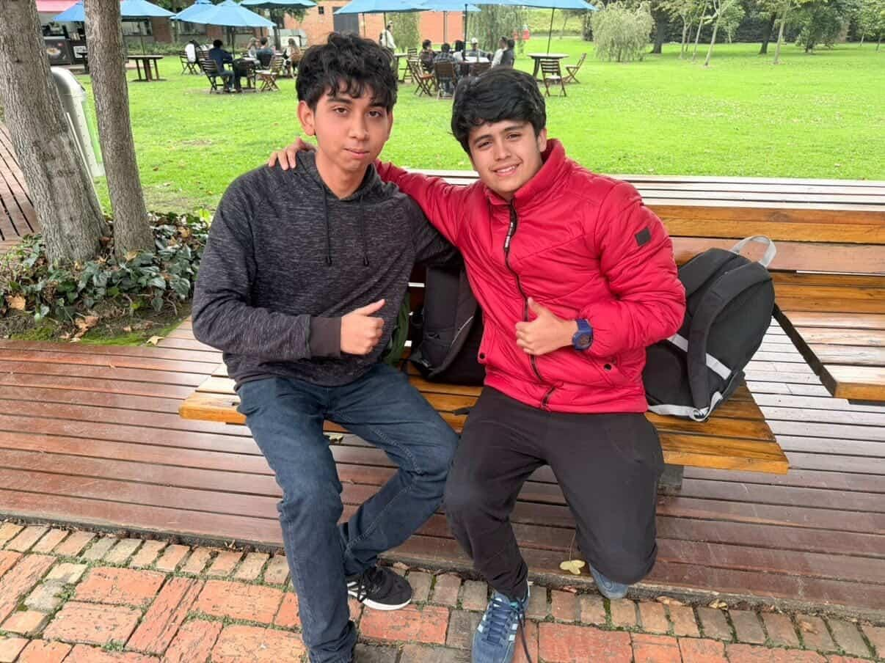
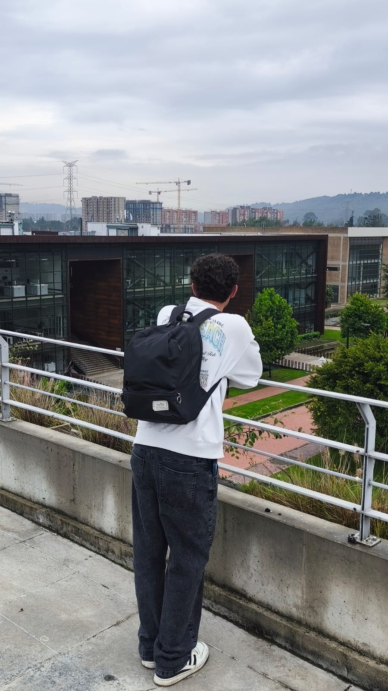
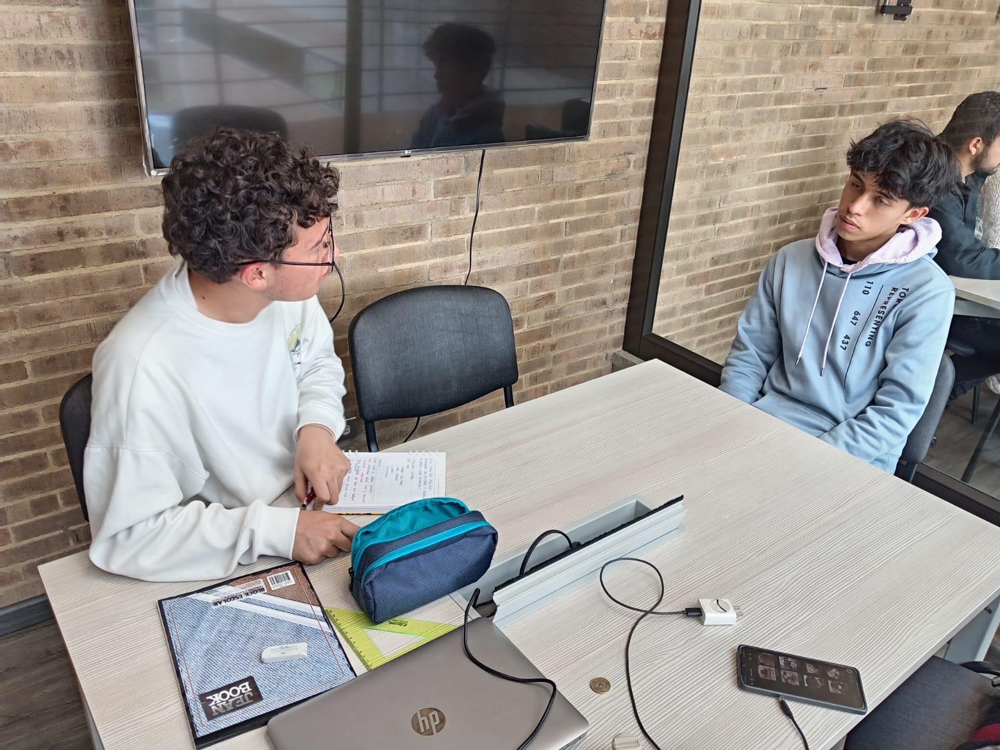

2.4 Perfil de los lugares de inspiración
Lugar 1
Campus Universitario
Lugar 2
Cafeteria
Lugar 3
Biblioteca
2.5 Historias
2.5 Historias
Historia 1
Juan Lasso

Historia 2
Lugar de inmersión: Escuela Colombiana de Ingenieros Julio Garavito


Historia 3
Kristian Camilo Rojas

Historia 4
Laura Sofía Suescún Leal
Historia 5
Universidad de Cundinamarca, sede Chía